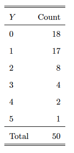

My works
Sample Project One
This project is related to bootstrap. Consider number of claims, denoted by Y , for a
policyholder. A random sample of Y is observed and summarized in table below.

We are interested in the estimator for Var(Y), T = 1/(n-1)Σ(Yi -Y)^2 where Y= 1/nΣYi.
1. Use empirical bootstrap to approximate
(a) mean squared error of T;
(b) 95% confidence interval of T.
2. Assuming N is a Poisson distribution, use parametric bootstrap to approximate
(a) mean squared error of T;
(b) 95% confidence interval of T.
My Result